Problem formulation
Defines crack monitoring as coupled identity association and growth localization across views and time.
Research project Manuscript in preparation
Geometry-assisted registration and morphology-aware instance tracking for monitoring how concrete cracks persist, branch, and grow under changing camera viewpoints.
Abstract
Whether a crack is actively growing, not merely whether it exists, determines how urgently a concrete structure must be assessed and how frequently it should be inspected. Yet cameras cannot always remain at fixed viewpoints while cracks initiate, extend, branch, and interact over time. Visual monitoring therefore becomes a coupled cross-view and cross-time problem: the same physical crack must retain its identity under changing viewpoints, and newly appeared growth must be separated from inherited crack segments in a unified view.
This study formulates the task as cross-view and cross-time crack-instance tracking. The proposed framework combines image-based geometric registration, morphology-aware crack instantiation, chronological identity propagation, and skeleton-based growth measurement. Evaluation on staged laboratory loading shows that the framework can establish loose cross-view identity correspondence, while strict spatial overlap and early micro-crack localization remain constrained by segmentation quality and projection drift.
Contributions
The work connects geometric correspondence, physically meaningful crack instances, temporal identity, and growth quantification within one evaluation framework.
Defines crack monitoring as coupled identity association and growth localization across views and time.
Combines geometry-assisted registration with morphology-aware instantiation and temporal ID propagation.
Evaluates identity consistency, immediate and delayed growth localization, and propagated-length error.
Provides staged beam observations with pixel masks and scene-local crack identities across loading stages.
Method
The system converts a sequence of viewpoint-varying crack masks into persistent physical crack identities and separates inherited support from newly developed extension.
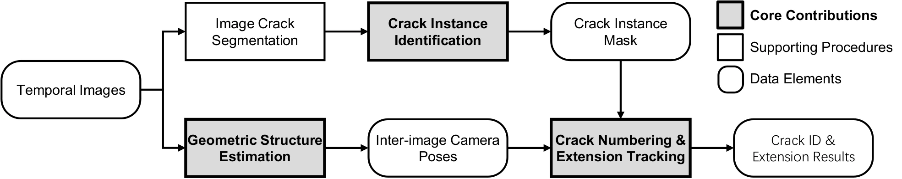
MASt3R supplies dense descriptors, 3D point maps, camera poses, and confidence for mapping views into a common reference.
A DeepLabv3+-based predicted-mask front end extracts narrow crack support while the downstream tracking method remains modular.
Direction, endpoint gap, normal offset, and branch angle reconnect same-root fragments without merging independent cracks.
Projected overlap and topology-aware fallbacks propagate IDs; skeleton support separates matched crack from new extension.
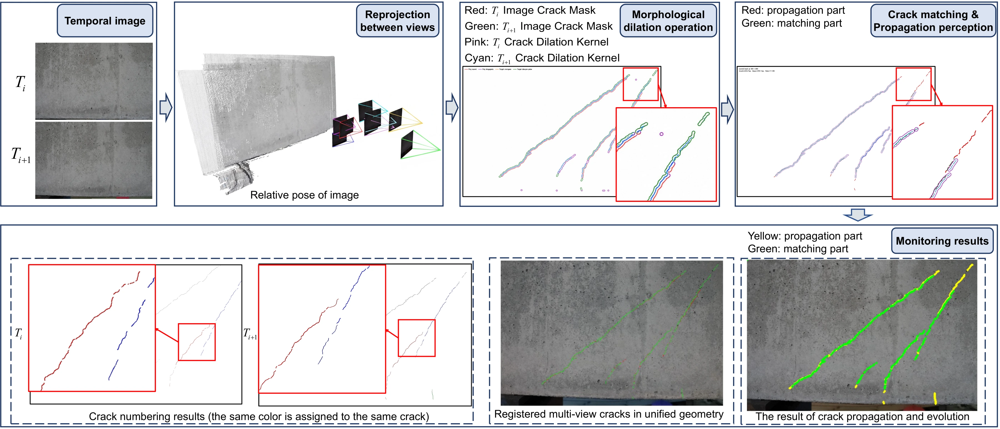
Dataset
The evaluation set spans Mode I opening, mixed Mode I-II branching, and Mode II shear behavior across three concrete specimen families.
Temporal acquisition
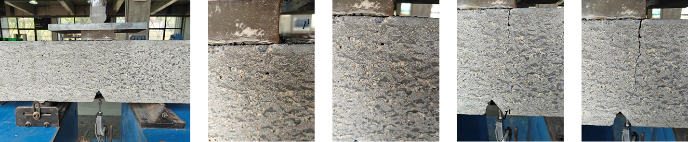
Annotation
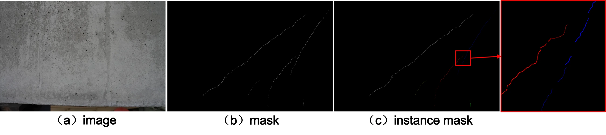
| Specimen family | Scenes | Observed behavior | Tracking challenge |
|---|---|---|---|
| Pre-notched beams | 2 | Mode I opening | Early micro-crack emergence and long extension |
| L-shaped beams | 3 | Mixed Mode I-II branching | Turning, branching, and topology change |
| Deep beams | 3 | Mode II shear | Multiple nearby cracks and identity ambiguity |
Results
The framework produces useful loose identity correspondence and temporal growth localization, but strict overlap remains a harder problem under viewpoint change.
Identity consistency
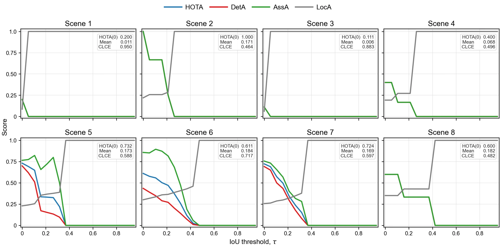
Delayed localization
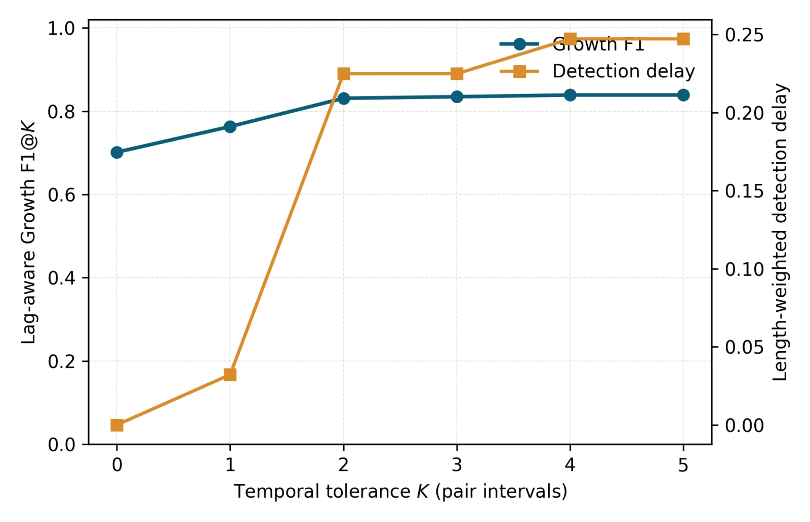
| Instantiation | HOTA(0) | Immediate F1 |
|---|---|---|
| Connected components | 0.134 | - |
| Skeleton branches | 0.143 | - |
| Full morphology-aware method | 0.668 | 0.701 |
| Geometry strategy | F1 | CLCE |
|---|---|---|
| Scene-level geometry only | 0.528 | 1.506 |
| Adjacent-pair refinement | 0.701 | 0.739 |
Qualitative tracking
Each sequence projects consecutive observations into a unified view. Green traces inherited support and yellow traces newly localized growth.
Pre-notched beam
Tracks a dominant crack as it lengthens upward through successive load stages.
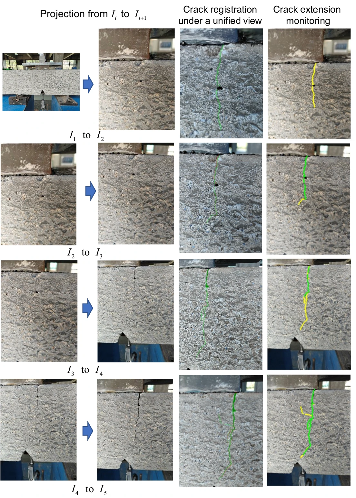
L-shaped beam
Maintains the crack history as the path changes direction and develops a new branch.
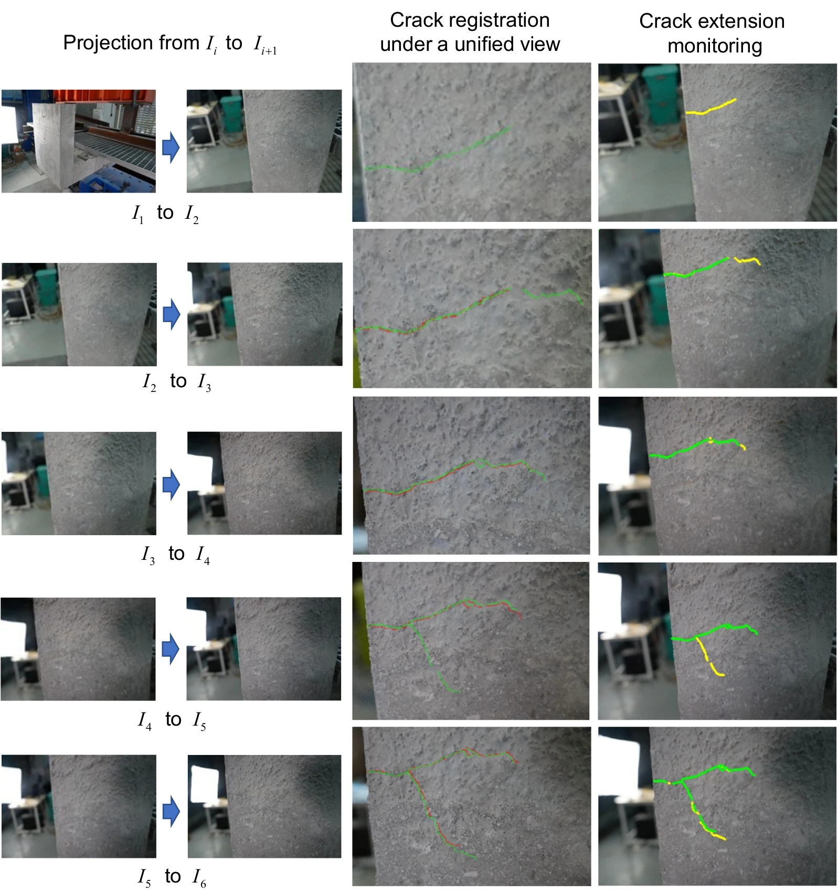
Deep beam
Associates several nearby crack instances where projection drift and identity ambiguity are strongest.
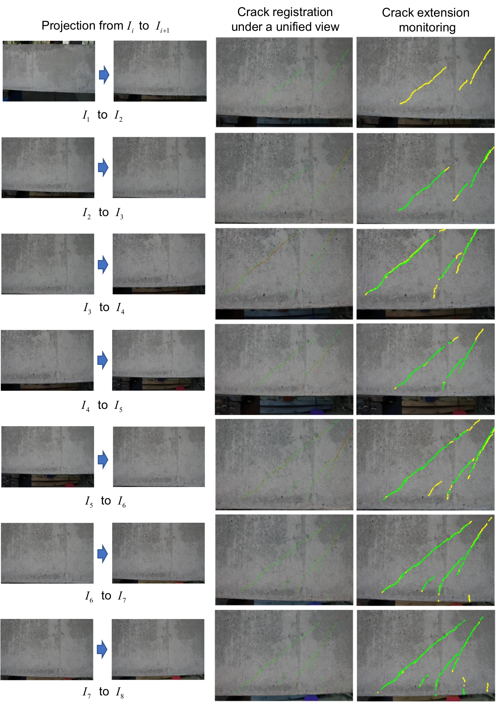
Additional analysis
The downstream tracking formulation is modular: it can use different dense matching front ends and remains stable across a practical range of growth-support radii.
Matcher ablation
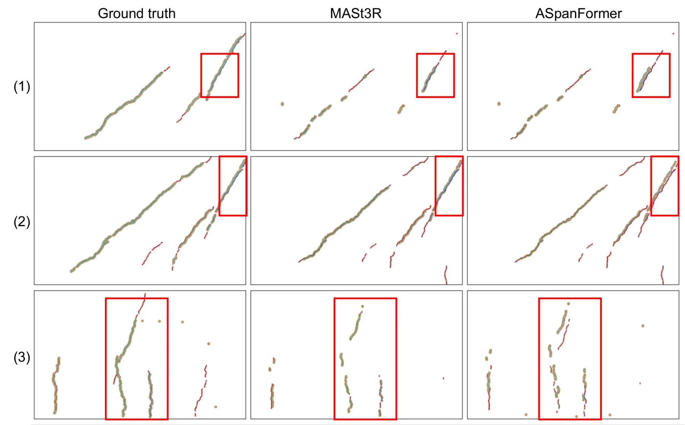
Tolerance sensitivity
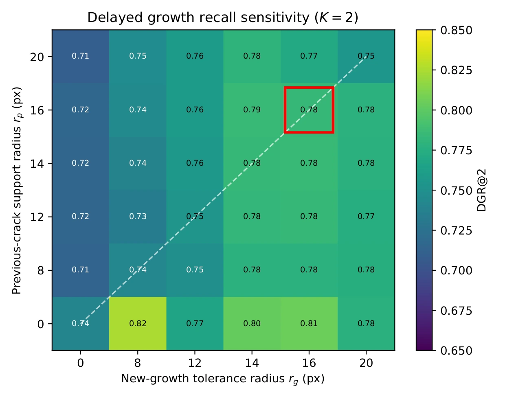
Limitations
Cracks only one to three pixels wide can be weakly segmented, fragmenting topology and delaying growth localization.
Texture-poor surfaces, occlusion, and large viewpoint changes reduce strict overlap even when physical identity is preserved.
The current evidence comes from staged beam loading; deployment on bridges, tunnels, UAVs, and inspection robots remains future work.
The supplied manuscript is still being finalized: author metadata, citation details, and the public release status of the linked code and dataset repository are pending. This page therefore reports only confirmed method, dataset, and experimental information from the manuscript.